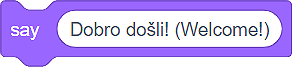

Vizuelni programski jezik Skreč¶
Skreč je vizuelni programski jezik napravljen za decu. Programiranje u Skreču ne zahteva pisanje naredbi. Za izradu programa, dovoljno je da, u odgovarajućem redosledu složimo blokove (slično kao pazle ili kockice).
- Rezultat izvršavanja programa koji sadrži samo naredbu  izgleda ovako:
 .
.
Skreč (verziju 3) možemo da ga koristimo na dva načina:
preuzimanjem instalacione datoteke sa adrese https://scratch.mit.edu/download i instaliranjem na lični digitalni uređaj (desktop verzija programa);
na adresi https://scratch.mit.edu (onlajn verzija programa).
Oba načina imaju svoje prednosti i mane.
Ako instaliramo Skreč desktop na lični digitalni uređaj radićemo udobnije i brže, pre svega zato što nećemo zavisiti od kvaliteta internet veze, kao ni od sporadičnog održavanja Skreč onlajn platforme (ona je tada nedostupna.
Ako programiramo u okviru Skreč onlajn platforme, neophodno je napravimo svoj nalog. Uz nalog dolazi mogućnost da na Skreć onlajn platformi čuvamo kreirane programe i pristupamo im sa bilo kog uređaja povezanog na internet. Pored ove pogodnosti, onlajn verzija Skreča nudi ti da sačuvaš delove programa u Rancu (Backpack) i ponovo ih koristiš kada ti zatrebaju. Dodatnu prednost predstavlja i mogućnost objavljivanja programa. Nakon objavljivanja, tvoj program postaje vidljiv drugim korisnicima Skreča, koje nazivamo Skrečerima. Kao što oni mogu da vide i remiksuju (prerade) tvoje programe (projekte) i ti možeš da vidiš i remiksuješ njihove. Na platformi možeš i da potražiš pomoć. Pomoći drugim Skrečerima potpuno je u duhu ove onlajn zajednice.
Radno okruženje u obe verzije Skreča izgleda skoro istovetno, s tim da onlajn verzija sadrži sve elemente instalirane verzije i još neke funkcionalnosti. Na ovoj stranici, prikazaćemo elemente Skreč onlajn platforme.
Skreč onlajn platforma¶
Programi koje kreiramo na onlajn Skreč platformi nazivamo projektima. Projekte kreiramo klikom na dugme Create. Otvoriće se radno okruženje sledećeg izgleda:

Linija menija;
Kartice Programiranje (Code), Kostimi (Costumes) i Zvukovi (Sounds);
Izbor kategorija blokova koje je moguće dodati na radnu površinu;
Prostor za kreiranje programa (slaganje blokova) koji se odnosi na aktivnog lika ili pozornicu;
Ranac (Backpack);
Lista likova sa osnovnim parametrima (osobinama) - aktivani lik označen je plavim okvirom;
Lista pozadina pozornice;
Pozornica.
 Zaglavlje radnog okruženja zauzima Linija menija.
Zaglavlje radnog okruženja zauzima Linija menija.

Klikom na Scratch otvoriće se stranica naloga korisnika koji je trenutno prijavljen na platformu (u našem slučaju to je stranica naloga Petlja). U okviru ove stranice moguće je pogledati relevantna obaveštenja, novosti, predloge projekata drugih Skrečera, ali i sve poruke koje je vlasnik naloga dobio (Messages), kao i programe koje je napravio (My Stuff).
Klikom na ikonicu zemljine kugle otvoriće se padajuća lista iz koje treba da odaberemo jezik na kome će biti prikazani svi elementi radnog okruženja;
File nudi nekoliko važnih opcija: pokretanje novog projekta (New), čuvanje projekta (Save now), čuvanje projekta kao kopije postojećeg (Save as a copy), učitavanje programa sa ličnog računara (Load from your computer) i preuzimanje projekta na lični računar (Save to your computer);
Edit omogućava da povratimo izbrisani lik sa svim njegovim blokovima (Restore), kao i da uključimo turbo režim izvršavanja programa (Turn on turbo mode). Ako ne želimo da se program izvršava brzo, dovoljno je da turbo režim isključimo (Turn off turbo mode);
Klikom na Tutorials otvoriće se stranica u okviru koje možemo da odaberemo neko od uputstava za izradu programa u Skreču;
U ovo polje unosimo naziv projekta;
Klikom na dugme (Share) činimo da naš projekat bude javno dostupan drugim Skrečerima. Tada se formira stranica projekta;
See project page vodi nas na stranicu našeg projekta u okviru koje treba da unesemo: uputstva za korišćenje programa (Instructions), napomene i informacije o kreatorima (Notes and credits). Na ovoj stranici možemo da pokrenemo izvršavanje grama, kao i da se vratimo u radno okruženje za programiranje, klikom na dugme See inside.
Klikom na ikonicu fascikle (My Stuff) otvoriće se stranica sa svim programima koje je prijavljeni korisnika napravio.
Centralni deo radnog okruženja zauzimaju kartice Programiranje (Code), Kostimi (Costumes) i Zvukovi (Sounds).

Kartica Programiranje (Code) sadrži kategorije blokova sa izlistanim blokovima koji im pripadaju (boja bloka odgovara boji kategorije kojoj pripada) koje se odnose na aktivnog lika i prostor za programiranje u koji se blokovi postavljaju prevlačenjem;
Kartica Kostimi (Costumes) sadrži editor sa alatima za dodavanje, brisanje i prilagođavanje kostima aktivnog lika;
Kartica Zvukovi (Sounds) sadrži editor sa alatima za dodavanje, brisanje, reprodukcija i osnovnu obradu zvučnog zapisa.
Donji desni ugao pozornice rezervisan je za dodavanje/brisanje likova i pozadina pozornice. Likove i pozadine pozornice dodajemo izborom iz biblioteke likova/pozadina (Choose a Sprite/Backdrop), možemo da ih nacrtamo (Paint), da prepustimo Skreču da nas iznenadi i odabere lika/pozadinu umesto nas (Surprise), te da ih učitamo sa ličnog računara(Upload Sprite/Backdrop).
{kind=link}
Pozornica je prostor u okviru koga se program izvršava. Široka je 480 koraka (piksela) i visoka 360 koraka (piksela). Položaj likova na pozornici određen je sa dve vrednosti x: i y:.
Vrednost x: određuje položaj lika po širini pozornice (levo ili desno);
Vrednost y: određuje položaj lika po visini pozornice (gore ili dole);

Dakle, vrednosti x: i y: zavise od mesta na kome se lik nalazi. Ako želimo da se naš lik nađe u centru (središtu) pozornice, vrednosti treba da budu: x: 0 i y: 0. Informacije o tome gde se lik trenutno nalazi vidljive su u listi likova, u okviru njegovih parametara.
- U gornjem levom delu pozornice.
- Bravo! Odlično razumeš kako vrednosti X: i Y: određuju položaj lika na pozornici!
- U donjem levom delu pozornice.
- Prouči sliku na kojoj smo pozornicu podelili na četiri dela i obojili ih različitim bojama. Uočićeš da su, u zelenom delu pozornice vrednosti X > 0 i Y > 0; u crvenom delu pozornice vrednosti X < 0 i Y > 0; u plavom delu pozornice vrednosti X < 0 i Y < 0; u žutom delu pozornice vrednosti X > 0 i Y < 0. Da li sada možeš tačno da odgovoriš na naše pitanje?
- U gornjem desnom delu pozornice.
- Prouči sliku na kojoj smo pozornicu podelili na četiri dela i obojili ih različitim bojama. Uočićeš da su, u zelenom delu pozornice vrednosti X > 0 i Y > 0; u crvenom delu pozornice vrednosti X < 0 i Y > 0; u plavom delu pozornice vrednosti X < 0 i Y < 0; u žutom delu pozornice vrednosti X > 0 i Y < 0. Da li sada možeš tačno da odgovoriš na naše pitanje?
- U donjem desnom delu pozornice.
- Prouči sliku na kojoj smo pozornicu podelili na četiri dela i obojili ih različitim bojama. Uočićeš da su, u zelenom delu pozornice vrednosti X > 0 i Y > 0; u crvenom delu pozornice vrednosti X < 0 i Y > 0; u plavom delu pozornice vrednosti X < 0 i Y < 0; u žutom delu pozornice vrednosti X > 0 i Y < 0. Da li sada možeš tačno da odgovoriš na naše pitanje?
Q-12: Pažljivo pogledaj informacije o položaju lika na pozornici. Gde se lik nalazi?

Učešće u Skreč onlajn zajednici¶
Bilo da smo program (projekat) kreirali na onlajn Skreč platformi ili u njegovoj desktop verziji, možemo da ga učinimo dostupnim drugim ljudima zainteresovanim za programiranje u ovom vizuelnom programskom jeziku.
U oba slučaja, neophodno je da:
posedujemo nalog na Skreč onlajn platformi;
program bude postavljen na platformu (programe nastale u oflajn verziji Skreča potrebno je sa učitamo na platformu: File - Load from your computer);
objavimo projekat klikom na dugme .
Da bi drugi korisnici Skreča dobro razumeli i koristili naše programe, važno je da ih detaljno opišemo na naslovnoj stranici projekta. Pristupamo joj klikom na  .
.

Drugi korisnici Skreča stranicu nešeg projekta vide ovako:
Uočavamo da bilo koji korisnik Skreč onlajn platforme može da remiksuje naš projekat. Dovoljno je da klikne na dugme  , nakon čega može da dograđuje, menja i objavljuje novonastali program. Informacije o broju pregleda projeka, remiklsa, lajkova… vidljiv je na početnoj stranici.
, nakon čega može da dograđuje, menja i objavljuje novonastali program. Informacije o broju pregleda projeka, remiklsa, lajkova… vidljiv je na početnoj stranici.
Skreč onlajn platforma posvećena je očuvanju duha Skrečerske zajednice. Klikom na dugme  korisnici mogu da prijave neprimerene sadržaje, komentare, diskusije. Nakon primljene prijave, Skreč tim pregleda problematični sadržaj i, ako nije u skladu sa pravilima ponašanja (https://en.scratch-wiki.info/wiki/Community_Guidelines), uklanja ga sa platforme.
korisnici mogu da prijave neprimerene sadržaje, komentare, diskusije. Nakon primljene prijave, Skreč tim pregleda problematični sadržaj i, ako nije u skladu sa pravilima ponašanja (https://en.scratch-wiki.info/wiki/Community_Guidelines), uklanja ga sa platforme.